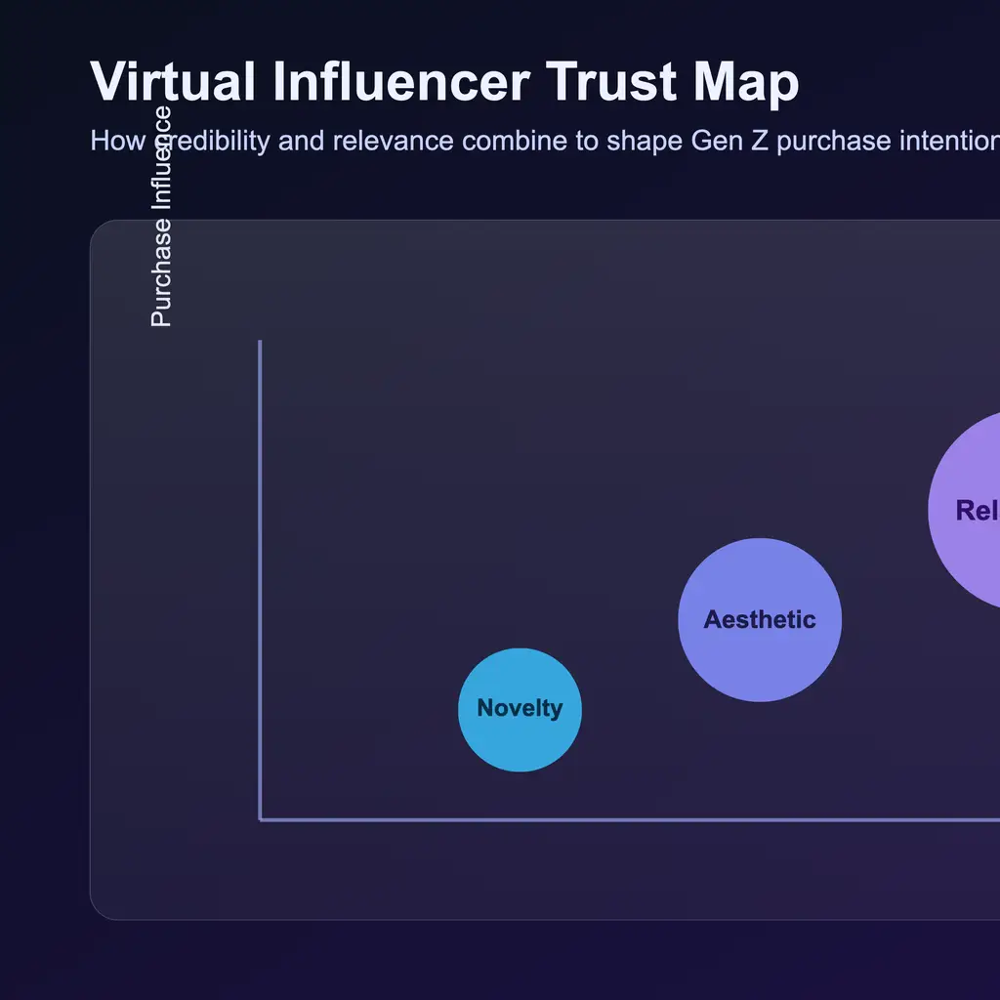

Focus area
Creator Economy Research
This cluster focuses on how creators, platforms, and audiences stay connected. It combines work on influencer retention with research on how virtual influencers shape trust and purchase intention.
Last updated 20 Apr 2026
UGC retentionInfluencer strategyVirtual influencersTrust modeling
What I Look For
Engagement that lasts, not just attention spikes.
The work in this topic is built around what keeps audiences engaged, what transfers trust to brands, and where digital novelty stops being persuasive.
Projects
Creator-economy work inside the archive.
These pages contain the main models, diagrams, and evidence framing for the creator cluster.
 Creator
CreatorInfluencer Retention, Engagement, and Brand Transfer on UGC Platforms
Links experience quality, brand equity, and engagement to retention in Vietnamese UGC use.
SEMUGC strategyRetention

CreatorVirtual Influencer Cues, Gen Z Trust, and Purchase Intention
Tests how credibility, argument quality, and speciesism shape Gen Z response to virtual personas.
SurveyModerationTrust